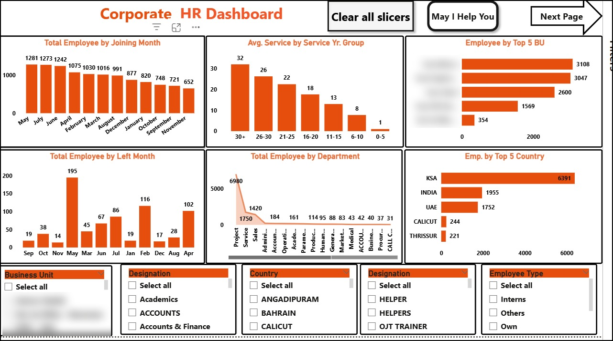
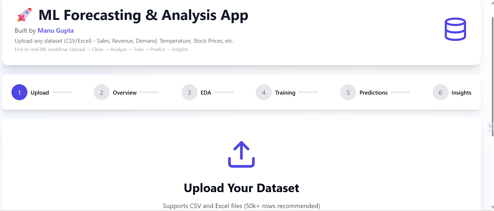
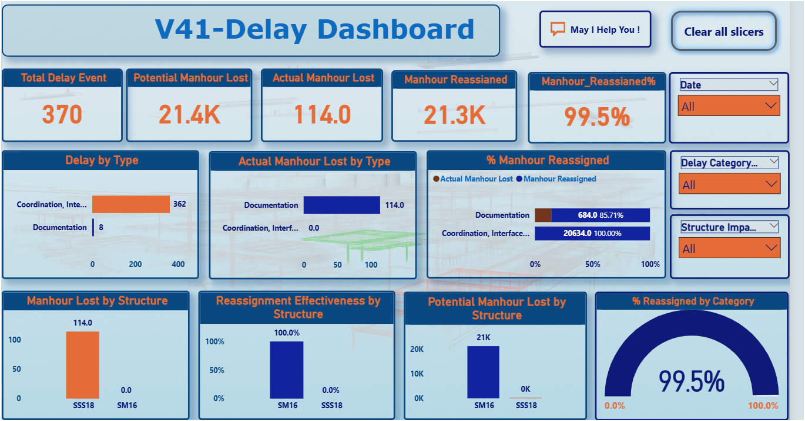
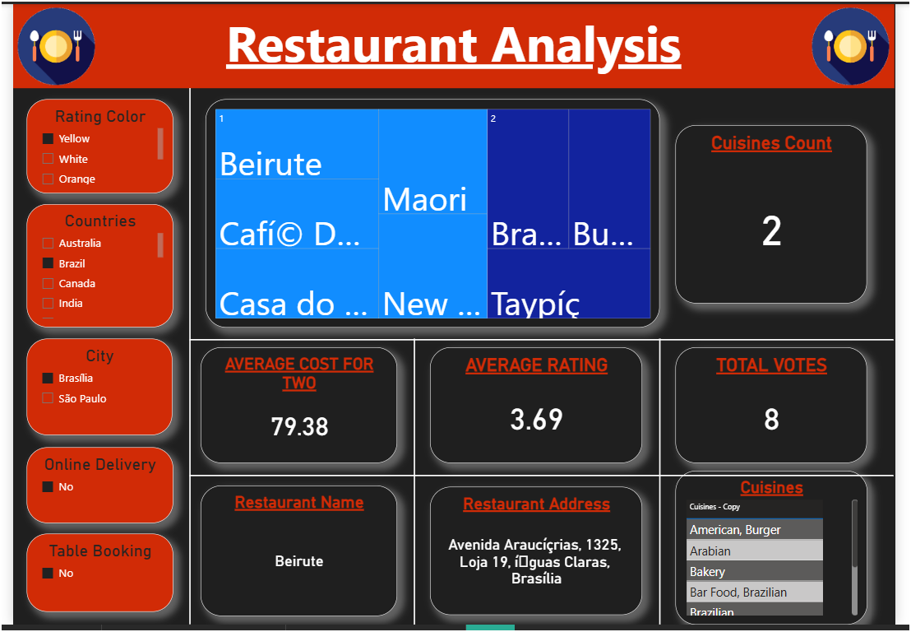
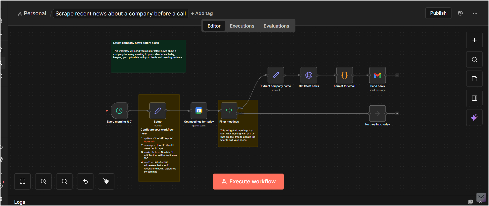
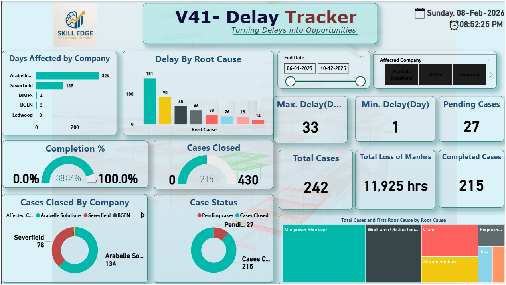

Real-world dashboards, apps and automations I have built

Interactive Power BI dashboard built for a Saudi Arabia-based business group. It brings joining and exit trends, service-year groups, and headcount by department, business unit and country into one view.
HR teams needed one place to see the whole workforce instead of separate reports.
A Power BI dashboard with a clean data model, DAX measures and slicers for business unit, designation, country and employee type.

A forecasting app that takes any sales or demand dataset (CSV or Excel) through a full ML workflow: upload, clean, explore, train, predict and explain.
Business owners have historical data but no simple way to turn it into a forecast.
A step-by-step app: Upload, Overview, EDA, Training, Predictions and Insights, built in Python.

Production monitoring dashboard for a UK welding company, tracking welding progress, NDT, delays and man-hour loss.
The client needed a clear, regular view of weld progress and where work was getting stuck.
Multi-page Power BI dashboards with status breakdowns, welder-wise output, NDT coverage and an auto-generated text insight.

An analysis app that runs exploratory data analysis (EDA) on a dataset and produces statistics, charts and written insights automatically.
Manual analysis of a new dataset takes time and is easy to get inconsistent.
A Python app that profiles the data, builds visualizations and summarizes the key patterns.

Workflow automations built with n8n and Python to collect data, process it and deliver results without manual steps.
Repetitive tasks like collecting information and sending updates take time every day.
n8n workflows that connect calendars, APIs, Google Sheets and email, with scheduled runs and simple setup notes.

Analytics dashboard that tracks man-hour loss across projects and groups it by cause.
The team needed to see where man-hours were being lost and why.
A Power BI dashboard with root-cause categories, trend views and drill-down by project.
Let's discuss how data analytics can transform your business.
Start a Conversation